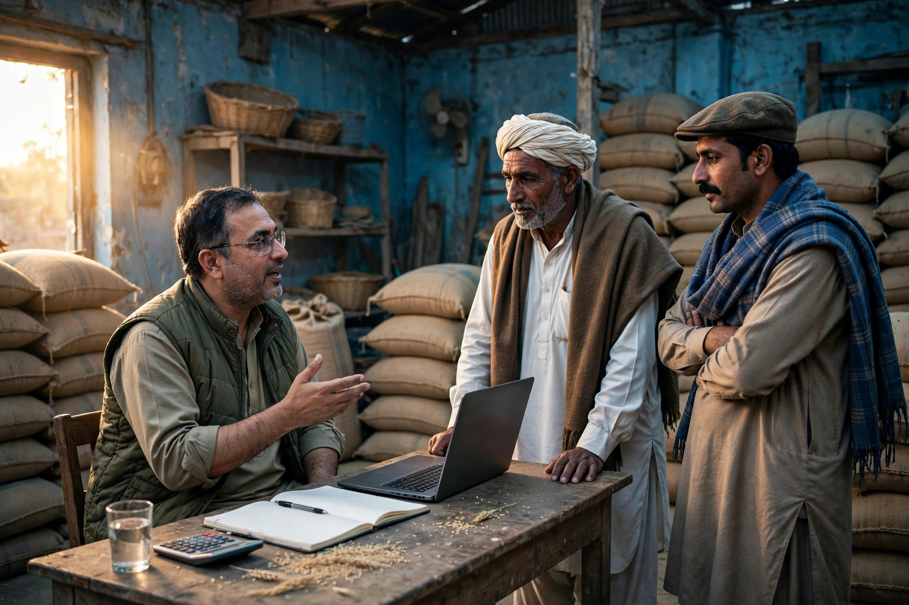

Jaman Shah sits in farming country. The villages and fields around it run on the crop calendar, and the dealers who supply seed, fertiliser, pesticide and other inputs are part of that rhythm. A farmer deciding where to buy does not browse casually. He searches with a season, a crop and often a problem in mind.
For an agri-input dealer, SEO means being findable and trustworthy at those exact moments. This article covers the practical steps, and it supports our SEO services for Jaman Shah page for businesses across the area.

Farmers Search With the Season
Demand in agriculture is not spread evenly across the year. It gathers before sowing, around fertiliser stages, and suddenly when weather or pests threaten a crop. At those times a farmer may search for a dealer, a product type or advice, and then travel the same day.
Your online presence must be ready before the rush, not built during it. A complete Google Business Profile, correct hours for the busy season, and a phone number that is answered quickly matter most when a decision cannot wait until tomorrow.
The Dealer Listing: Basics That Win the Visit
Start with your Google Business Profile. Choose the category that describes a dealer honestly, place the map pin at your actual premises, and add clear photos of the shop, the godown and the stock. A farmer coming from a village with a tractor trolley or a loader wants to recognise the place and know he can reach and park there.
In your services and description, name what you deal in plainly:
- Seed for the main local crops, described by crop and season
- Fertilisers and the broad types farmers ask for by name
- Crop protection products, in general terms
- Any practical help you offer, such as guidance on use at the counter
Do not publish prices you cannot honour through a season, and never invent stock claims. A phone call to confirm is normal in this trade; your job online is to earn that call.
Name Products and Crops the Way Farmers Say Them
Farmers search by crop, by problem and by the product names used locally. Trade language and local language are not always the same. Listen at your own counter to how products are requested, and use those familiar names in your profile and on any page you publish.
This everyday wording is the foundation of local keyword research for a dealer. It is also seasonal: the same farmer searches differently at sowing, at first irrigation and at harvest. Matching that cycle keeps you relevant all year rather than visible for one month and forgotten.
Simple Seasonal Content That Helps
You do not need a large website to be useful online. Short updates on your profile, and simple pages if you have a site, can cover the questions of the moment: sowing preparation, fertiliser timing in general terms, or what to check when a pest appears. Keep advice general and responsible, and invite farmers to visit or call for guidance for their own fields.
Seasonal content does two jobs. It helps farmers, and it shows Google that your business is active and connected to the searches of the season. Our piece on the keywords Jaman Shah customers use explains the search habits behind this.
Trust Is the Real Currency
Agri dealing runs on trust. A farmer stakes a season on the seed and inputs he buys, so he chooses dealers whose advice has proved sound. Online, that trust shows up as honest reviews, accurate information and a profile that looks cared for. Ask satisfied farmers, politely, to review you. Reply with thanks. Never buy praise, because farming communities talk, and a dealer reputation travels across villages faster than any advert.
Zaheer Seo Expert is based in Layyah and has no office in Jaman Shah. We serve dealers around Jaman Shah from Layyah, online and by phone, which fits the seasonal pattern: we prepare your listing and content before the season, so you are ready when farmers start searching.

Be listed, be accurate, speak the farmer language and be ready before the season turns. For an agri business near Jaman Shah, that is SEO with its sleeves rolled up.
Reaching Farmers in the Surrounding Villages
Most of your customers do not live beside your shop; they live in the villages around Jaman Shah and choose a dealer when a need arises. Your listing should speak to that journey. Mention honestly that farmers visit you from the surrounding area, keep the map pin precise so a first-time visitor can plan the trip, and make sure your phone number is answered during the hours farmers are most likely to call before setting out. A dealer whose information is complete respects the farmer time and fuel, and that respect is noticed. In farming country, saving a wasted journey is a form of service, and it is one more reason a customer returns to the same dealer season after season.
Frequently Asked Questions
When do farmers search for dealers like mine?
Searches rise around sowing, fertiliser application and pest problems, and when a crop issue appears suddenly. Having your listing complete before the season starts means you are visible when those urgent searches happen.
Should I list every product I stock?
List your main product types and well-known ranges in clear words, rather than every single item. Farmers usually search by need, crop or product type first, then call to confirm exact stock and current details.
Can I share farming advice online without a big website?
Yes. Short, useful posts or profile updates about seasonal tasks can be enough to start. Practical advice in plain language builds the same trust online that good advice at the counter builds in person.
Do you have an office near Jaman Shah for dealers?
No. Zaheer Seo Expert is based in Layyah and serves Jaman Shah agriculture businesses from Layyah, with no office in Jaman Shah. The work is done online and by phone, which suits seasonal dealer marketing well.
Want More Customers From Google?
Call 0327 7350830 or email seozaheer14@gmail.com. Zaheer Seo Expert, Layyah - Rajan Shah Road, Rana Nagar, Chak 116 TDA, Pakistan. Open 24 hours.
Get Your SEO Strategy →